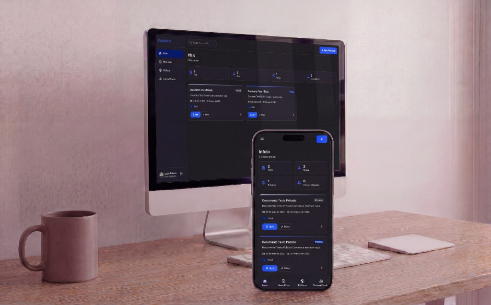

- Arquitetura
- Contextos distribuídos (.NET + edge)
- Padrão
- Clean Architecture + CQRS com MediatR
- Tempo real
- WebSocket + Durable Objects
- Testes
- Integração com Testcontainers
Visão geral
Plataforma de documentos colaborativos com autenticação OAuth, controle de visibilidade, gestão de colaboradores e edição em tempo real. Resolve um problema típico de produto SaaS: permitir que múltiplos usuários criem, compartilhem e editem documentos com regras de acesso e sincronização entre clientes.
O sistema tem três frentes: gerenciamento de documentos (CRUD, versionamento e compartilhamento), colaboração em tempo real (presença e broadcast via WebSocket) e autenticação com login via GitHub/Google.
Arquitetura
Aplicação distribuída por contextos, com backend principal em .NET (monólito modular em camadas) e um contexto edge separado, na Cloudflare, dedicado à colaboração em tempo real.
-
CollabDocs.DomainEntidades, enums, eventos e interfaces. Regras explícitas como Document.CanEdit() e CanView(). -
CollabDocs.ApplicationCommands, queries, DTOs e handlers (CreateDocumentHandler, UpdateDocumentHandler...). -
CollabDocs.InfrastructureEF Core, repositórios, cache Redis, mensageria RabbitMQ e outbox. -
CollabDocs.APIControllers finos, autenticação JWT, Swagger, DI e observabilidade. -
workers/ (Cloudflare)Runtime edge: WebSocket, Durable Objects, rate limiting e integrações.
Fluxo de escrita e colaboração em tempo real
- O usuário faz login via GitHub ou Google no NextAuth; é gerada uma sessão JWT HS256 compartilhada entre frontend, Worker e .NET.
- O cliente chama
/api/dotnet/[...path]no Next.js, que faz proxy server-side para a API .NET. - A API valida o JWT, resolve o usuário via claims e executa o caso de uso através do MediatR.
- O handler aplica a regra de negócio, persiste no PostgreSQL e, quando aplicável, grava uma mensagem na outbox.
- Após a escrita, o backend invalida o cache Redis do usuário.
- No editor, o cliente abre um WebSocket para o Worker da Cloudflare — o JWT vai por query string, porque o browser não permite header customizado no upgrade do WebSocket.
- O Worker valida o token, consulta a permissão e encaminha a sessão a um Durable Object por documento, que mantém os usuários conectados e faz o broadcast das atualizações.
Pontos fortes
- CQRS com MediatR aplicado de forma real e visível: commands e queries com handlers dedicados por caso de uso.
- Uso real de RabbitMQ e Transactional Outbox, raro em portfólios júnior.
- Regras de autorização encapsuladas na entidade de domínio, não espalhadas em controllers.
- Colaboração em tempo real com Cloudflare Workers e Durable Objects.
- Deploy multi-cloud: Vercel, Cloudflare e AWS, com CI/CD no GitHub Actions e OIDC.
- Testes .NET fortes para nível de portfólio, incluindo integração com Testcontainers.
Limites e decisões conscientes
O que este projeto não faz, e por quê. Descrever isso com precisão vale mais do que exagerar o escopo.
- O principal débito estrutural é a divisão de fonte de verdade: o frontend usa .NET + PostgreSQL para documentos, enquanto o Worker mantém lógica equivalente no D1 e autoriza o WebSocket consultando o D1, não o PostgreSQL.
- O consumer de eventos hoje apenas registra logs — não materializa projeções nem sincroniza contextos.
- O DDD é tático e parcial: faltam aggregates ricos, value objects e bounded contexts formalizados.
- A arquitetura está em transição: o desenho é interessante, mas a consistência entre contextos ainda não está consolidada.